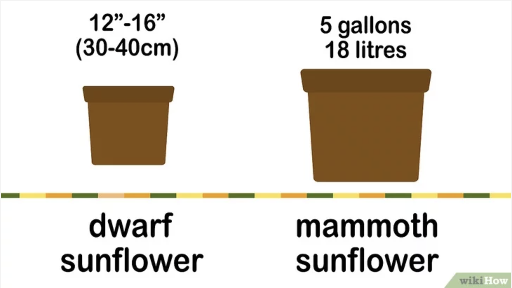

Objective 2 - Plant seeds
# 3 SKILLS FOR YOU #
- Planting depth: Each seed needs to be buried two and a half centimeters in the soil.
- Water the seeds every day: Sunflowers need more water to grow than other plants, so make sure the soil is moist and well drained. At least 7.5 liters of water should be poured every week while the seeds germinate.
- Watch the seeds as they germinate: After a week to ten days, the sunflowers should be young. In the meantime, continue watering daily to make sure the soil is moist, especially around the seeds.
